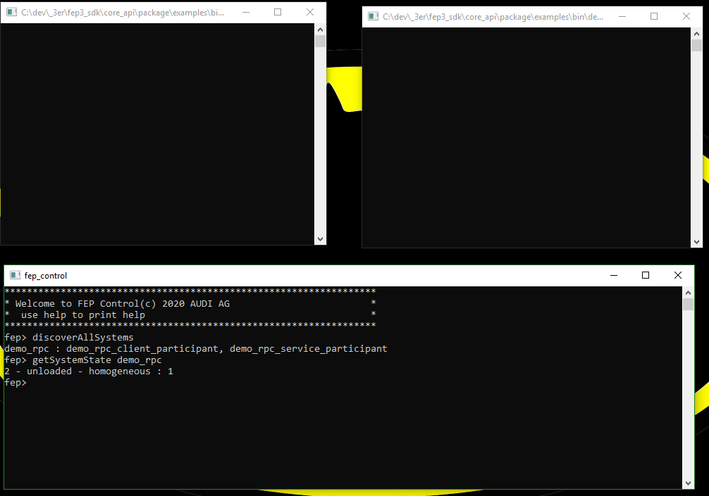
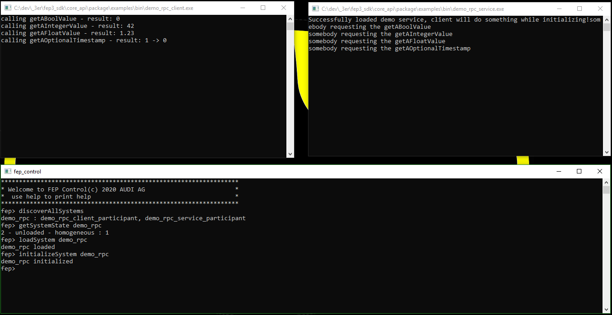
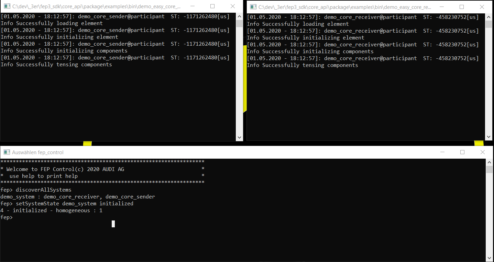
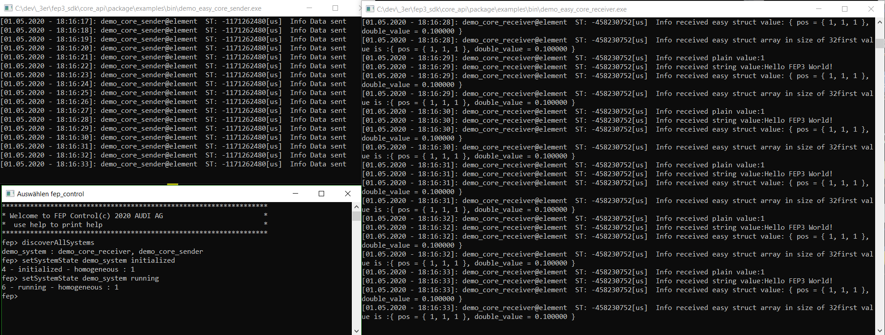

Examples
Demo Minimal Participant
Summary
This is a first very basic job, it creates a participant that contains a basic job that uses fep3::cpp::arya::DataJob, whose fep3::cpp::arya::DataJob::Process() method is triggered with the default periodicity.
Source Code
<fep3_sdk_DIR>/examples/src/minimal_participant/
Demo RPC Service and Demo RPC Client
Summary
The example shows how to implement a participant that provides a service via FEP Service Bus. It also shows the possibility to send requests to this service via RPC Client.
See more detailed information under How to create a RPC Service and a RPC Client within the FEP Service Bus.
Source Code
<fep3_sdk_DIR>/examples/src/rpc_service_bus/
How to start
Unfortunately, we have no launch script at the moment. To start and try the example do the following:
start <fep3_sdk_DIR>/examples/bin/demo_rpc_service
start <fep3_sdk_DIR>/examples/bin/demo_rpc_client
You will see the following:
load and initialize the system to see following:
Demo Core Easy Sender and Demo Core Easy Receiver
Summary
The example shows how to implement a participant that uses:
creating Properties via Configuration
Jobs
Source Code
<fep3_sdk_DIR>/examples/src/easy_core_example_element/
How to start
Unfortunately, we have no launch script at the moment. To start and try the example do the following:
start <fep3_sdk_DIR>/examples/bin/demo_easy_core_receiver
start <fep3_sdk_DIR>/examples/bin/demo_easy_core_sender
You will see following after initializing:
running the system to see following:
Demo CPP Easy Sender and Demo CPP Easy Receiver
Summary
The example shows how to implement a participant that uses:
creating Properties via Configuration
Source Code
<fep3_sdk_DIR>/examples/src/easy_cpp_example_datajob/
How to start
Unfortunately, we have no launch script at the moment. To start and try the example do the following:
start <fep3_sdk_DIR>/examples/bin/demo_easy_cpp_receiver
start <fep3_sdk_DIR>/examples/bin/demo_easy_cpp_sender
Demo Logging and Demo Logging System
Summary
The example shows how to implement a participant and control a system that uses:
The participant of this example sends a log to the console and via RPC once per second. The system then changes this behavior after a few seconds by changing the filter settings of the participant logger.
Source Code
<fep3_sdk_DIR>/examples/src/logging_example/
How to start
Unfortunately, we have no launch script at the moment. To start and try the example do the following:
start <fep3_sdk_DIR>/examples/bin/demo_logging
start <fep3_sdk_DIR>/examples/bin/demo_logging_system
The control tool is not needed for this example. The system starts and stops by itself.